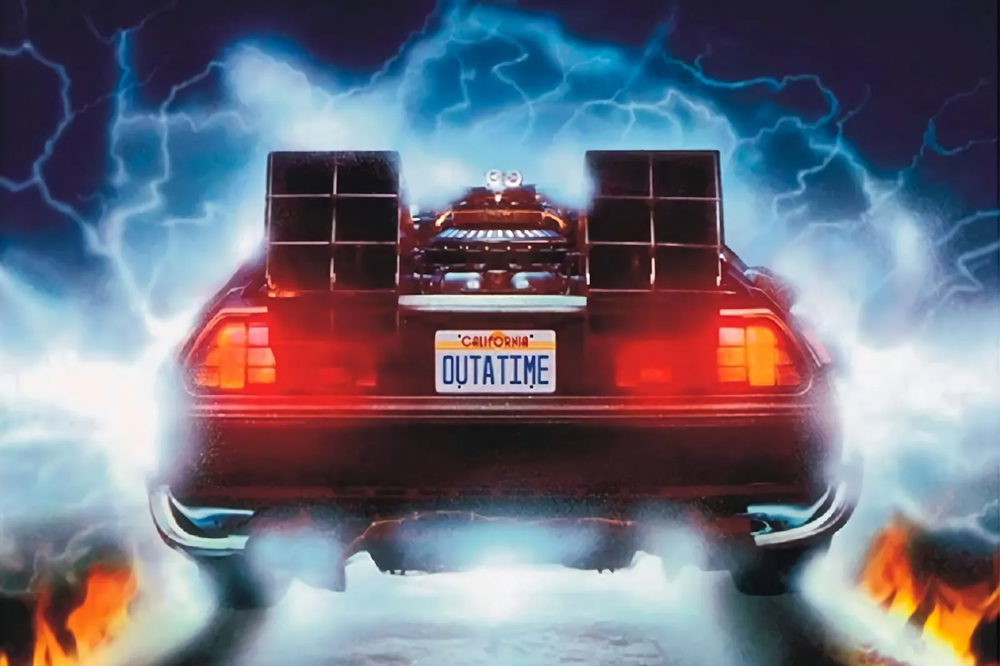
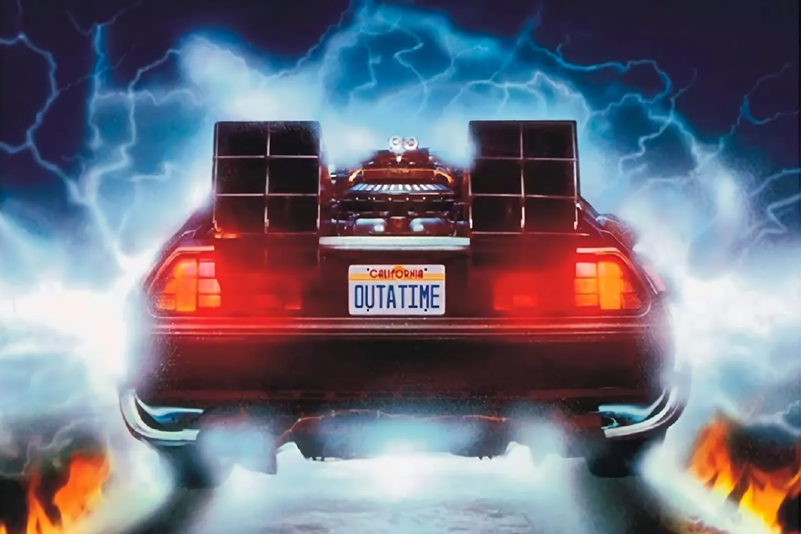

1980


Jan 2 .Australian Open Men's Tennis: Guillermo Vilas retains title for 4th and last Grand Slam win; beats American John Sadri 7-6, 6-3, 6-2
Jan 16.Paul McCartney is arrested at Tokyo International Airport for possession of marijuana; he is sent to jail for nine days before being deported
Jan 26.175,000 pay to hear Frank Sinatra sing in Rio de Janeiro
Feb 6.John Wayne Gacy goes on trial for the murder of 33 young men in Cook County, Illinois
Feb 7.Pink Floyd premiere their live version of "The Wall" at the Los Angeles Memorial Sports Arena in Los Angeles, California
Feb 14.US launches Solar Maximum Mission Observatory to study solar flares
Feb 18.Billy Wyman said he will leave Rolling Stones in 1983 (Sure!)
Feb 23.Oil tanker explosion off Pilos, Greece, causes 37-mil-gallon spillage
Feb 24.US ice hockey team clinches gold medal with 4-2 win over Finland at the Lake Placid Winter Olympics; comes after 4-3 "Miracle on Ice" victory against hot favorite Soviet Union
Mar 3.Pierre Trudeau sworn in, for the second time, as the 17th Prime Minister of Canada
Mar 5.Earth satellites record gamma rays from remnants of supernova N-49
Mar 13.American John Wayne Gacy receives the death sentence in Illinois for the murder of 12 people
Mar 27.Mount St Helens becomes active after 123 years
Apr 7.Jimmy Carter breaks relations with Iran during hostage crisis
Apr 11.Paul McCartney releases single "Coming Up"
Apr 30.Terrorists seize Iranian Embassy in London
may 6 .Star Wars:The empire strikes back is released
May 9.Slasher horror film "Friday the 13th" is released in US cinemas
May 16.Paul McCartney releases "McCartney II" album
May 18.Mount St Helens erupts in Washington state, causing the largest landslide in history, killing 57 people and costing $1 billion in damage
May 23.Horror film "The Shining" released directed by Stanley Kubrick, starring Jack Nicholson and Shelley Duvall, based on book by Stephen King
May 29.Larry Bird beats out Magic Johnson for NBA rookie of year
May 30.1st papal visit to France since 1814
Jun 7."Cars" by Gary Numan hits #9
Jun 13.UN Security Council calls for South Africa to free Nelson Mandela
Jun 17.Columbia Records releases Bruce Springsteen's fifth studio album "The River"; the 2-record set becomes a global smash, going top five in 8 countries
Jun 23."David Letterman Show" debuts on NBC-TV daytime David Letterman Comedian and TV Host David Letterman
Jul 2.Comedy film "Airplane!" written and directed by David Zucker, Jim Abrahams, and Jerry Zucker and starring Robert Hays and Julie Hagerty premieres
Jul 18.Billy Joel's "Glass Houses" album tops US charts, featuring "It's Still Rock 'n' Roll to Me"
Aug 4.John Lennon and Yoko Ono begin recording "Double Fantasy" in NYC
Sep 4.Yes performs its last concert at Madison Square Garden
Sep 20."Blizzard of Ozz", the debut solo album by English rock musician Ozzy Osbourne, is released in the United Kingdom Ozzy Osbourne Rock Vocalist Ozzy Osbourne
Sep 22.John Lennon and Yoko Ono sign a recording contract with Geffen Records
Sep 23.Bob Marley's last concert at Stanley Theatre Pittsburgh
Sep 28.Carl Sagan's 13 part "Cosmos" premieres on PBS
Sep 30.Ethernet specifications published by Xerox working with Intel and Digital Equipment Corporation
Oct 6.John Lydon (aka Johnny Rotten of the Sex Pistols) sentenced to 3 months imprisonment on assault charges
Oct 20.Geffen records release their first album, Donna Summer's "The Wanderer"
Oct 24.John Lennon releases single "(Just Like) Starting Over" in UK
Nov 1.USSR performs nuclear test
Nov 4.Republican candidate Ronald Reagan is elected President of the United States, defeating incumbent Democrat US President Jimmy Carter by a landslide
Nov 8.Voyager 1 space probe discovers 15th moon of Saturn
Nov 9.Iraqi President Saddam Hussein declares holy war against Iran
Nov 13.US spacecraft Voyager 1 sends back 1st close-up pictures of Saturn
Nov 21.John Lennon and Yoko Ono pose nude for photographer Allan Tannenbaum
Nov 21."Hi Infidelity" 9th studio album by REO Speedwagon is released
Dec 4.Two months after death of drummer John Bonham, Led Zeppelin announces they will disband
Dec 10.USSR performs underground nuclear test
Dec 8.Annie Leibovitz has a photo-shoot with John Lennon, the last person to professionally photograph him before he is murdered on the same day
Dec 19.Comedy film "9 to 5" starring Dolly Parton, Jane Fonda and Lily Tomlin is released
1981
Jan 4."Frankenstein" opens & closes on Broadway
Jan 4.British police arrest Peter Sutcliffe, the "Yorkshire Ripper"
Jan 16.John Lennon's single "Woman" is posthumously released in the UK
Jan 20.Ronald Reagan inaugurated as the 40th President of the United States of America
Jan 30.8th American Music Awards: Barbra Streisand & Kenny Rogers win
Feb 5."Piaf" opens at Plymouth Theater NYC for 165 performances
Feb 6.Beatles Paul McCartney, Ringo Starr & George Harrison record a tribute to John Lennon
Feb 6.Crime film "Fort Apache: The Bronx" starring Paul Newman released amid protests in the US
Feb 13.Longest sentence published by "The New York Times" - 1286 words
Feb 19.George Harrison is ordered to pay ABKCO Music $587,000 for "subconscious plagiarism" of his song "My Sweet Lord" with Ronnie Mack's song "He's So Fine"
Feb 21.Japan launches Hinotori satellite to study solar flares (580/640 k)
Feb 24.Britain's Prince Charles announces engagement to Lady Diana Spencer
Feb 24.An earthquake registering 6.7 on the Richter scale hits Athens, killing 16 people and destroying buildings in several towns west of the city.
Feb 27.Paul McCartney and Stevie Wonder record the single "Ebony & Ivory"
Mar 10."Bette Davis Eyes" single released by Kim Carnes (Billboard Song of the Year 1981)
Mar 20.Argentine ex-president Isabel Peron sentenced to 8 years
Mar 27."Blizzard of Ozz", the debut solo album by English rock musician Ozzy Osbourne, is released in the United States
Mar 29.Jorge Rafael Videla resigns as President and dictator of Argentina, handing the reins to Roberto Viola
Mar 30.US President Ronald Reagan is shot and wounded in an assassination attempt by John Hinckley, three others are also wounded
Apr 7."Street Songs" 5th studio album by Rick James is released (Billboard Album of the Year 1981)
Apr 24.San Antonio blocks 20 Golden State shots to set NBA reg game record
Apr 26."Copperfield" closes at ANTA Theater NYC after 13 performances
May 11.Andrew Lloyd Webber's musical "Cats" (based on poetry by T. S. Eliot) directed by Trevor Nunn first premieres in the West End, London
May 13.Pope John Paul II is shot and critically wounded by Turkish gunman Mehemet Ali Agca in St Peter's Square, Vatican City
May 16."Bette Davis Eyes" by Kim Carnes hits #1 for next 9 weeks
May 21.Reggae musician Bob Marley receives a Jamaican state funeral
Jun 5.George Harrison releases "Somewhere in England", his ninth studio album, includes John Lennon tribute "All Those Years Ago" (Featuring Paul and Ringo)
Jun 11.Cannibal Issei Sagawa kills Dutch student
Jun 12."Raiders of the Lost Ark" (the first Indiana Jones film) directed by Stephen Spielberg, produced by George Lucas, and starring Harrison Ford premieres
Jun 13.Teenager fires 6 blank rounds at Queen Elizabeth II
Jun 13.Tom Snyder interviews Charles Manson on "Tomorrow"
Jun 22.Mark David Chapman pleads guilty to killing former Beatle John Lennon
Jun 24."For Your Eyes Only", 12th James Bond, starring Roger Moore and 1st drected by John Glen premieres in London
Jun 25.Microsoft is restructured to become an incorporated business in its home state of Washington
Jun 28."Piaf" closes at Plymouth Theater NYC after 165 performances
Jul 7.Sandra Day O'Connor nominated for the Supreme Court, 1st female Supreme Court justice
Jul 9.Nintendo releases arcade game Donkey Kong in Japan (July 31 in the US)
Jul 10.Walt Disney's "Fox & The Hound" released
Aug 1.MTV premieres at 12:01 AM
Aug 1."Endless Love" single released by Diana Ross and Lionel Richie (Billboard Song of the Year 1981, Billboard Greatest Song Duet of All-Time)
Aug 18."My Fair Lady" opens at Uris Theater NYC for 119 performances
Aug 24.Mark David Chapman is sentenced to 20 yrs to life for John Lennon's murder
Aug 25.Voyager 2's closest approach to Saturn (63,000 miles/100,000 km)
Aug 26.Voyager 2 takes photos of Saturn's moon Titan
Sep 12."The Smurfs" animated cartoon series by Hanna-Barbera first broadcasts in North America
Sep 25.Rolling Stones begin their 6th US tour (JFK Stadium, Philadelphia)
Sep 28.“Physical” single released by Olivia Newton-John (Billboard Song of the Year 1982)
Oct 11.Then unknown musician Prince Rogers Nelson opens for The Rolling Stones at the Los Angeles Coliseum
Oct 31.1st live US radio drama in 25 years (Halloween Story on NBC)
Dec 9.Porn star John Holmes charged with Laurel Canyon murders
Dec 30."That Girl" single released by Stevie Wonder
Dec 31.CNN Headline News debuts
1982
Jan 2."Camelot" closes at Winter Garden Theater NYC after 48 performances
Jan 4.Golden Gate Bridge closed for 3rd time by fierce storm
Jan 8.Johnny Cash Parkway opens in Hendersonville, Tennessee
Jan 20.Heavy metal musician Ozzy Osbourne bites the head off a bat on stage in Des Moines, Iowa
Jan 21.Shaolin Temple" martial arts film released, first Hong Kong feature filmed in China, directed by Chang Hsin Yen, starring Jet Li in his debut role
Jan 22.75% of North America is covered by snow
Jan 25.9th American Music Awards: Pat Benatar & Kenny Rogers win
Feb 1."Late Night With David Letterman" debuts on NBC-TV, Bill Murray is first guest
Feb 3.John Sharples of England finishes 371 hours of disco dancing
Feb 13.Pink Floyd's album "Dark Side of the Moon" marks 402 weeks in the album charts
Mar 6.NBA highest scoring game: San Antonio beat Milwaukee 171-166 (3 OT)
Mar 7.NCAA Tournament Selection televised live for 1st time
Mar 15.Nicaragua suspends their citizens rights for 30 days
Mar 20.Joan Jett & Blackhearts' "I Love Rock 'n' Roll" goes #1 for 7 weeks
Mar 29.54th Academy Awards: "Chariots of Fire", Henry Fonda & Katharine Hepburn win
Apr 1.US formally transfers Canal Zone to Panama
Apr 2.Several thousand Argentine troops seize the Falkland (Malvinas) Islands from Great Britain
Apr 19.Sally Ride is named the 1st American woman astronaut
May 7.IBM releases PC-DOS version 1.1
May 10.WABC radio (NYC) plays its last record - John Lennon's "Imagine"
May 19.Sophia Loren jailed in Naples, Italy for tax evasion
May 29.1st papal visit to Britain since 1531
May 29.Pentagon plans 1st strategy to fight a nuclear war
Jun 4."Star Trek II: The Wrath of Khan," released in USA
Jun 11.Pope John Paul II visits Argentina
Jun 11."E.T. the Extra-Terrestrial", directed by Steven Spielberg, starring Henry Thomas and Drew Barrymore, is released
Jun 14.Argentina surrenders to Great Britain, ending the 74-day Falklands Islands conflict
Jun 21.Paul McCartney releases single "Take It Away"
Jun 22.Prince Charles and Princess Diana take new-born son Prince William home from hospital
Jun 25.Science-fiction film "Blade Runner", directed by Ridley Scott, starring Harrison Ford and Rutger Hauer, is released
Jul 11.FIFA World Cup Final, Santiago Bernabéu, Madrid, Spain: Italy beats West Germany, 3-1 in front of 90,000
Jul 16.NASA launches Landsat 4 to thematic map the Earth
Jul 24.Heavy rain causes a mudslide that destroys a bridge at Nagasaki, Japan, killing 299
Jul 24.Single "Eye Of The Tiger" by Survivor from "Rocky III" soundtrack starts 6-week run at No. 1 on US charts (Grammy for Best Rock Performance)
Aug 17.First Compact Discs (CDs) released to the public in Germany
Aug 29.Steve Miller's single "Abracadabra" hits #1
Sep 1.The United States Air Force Space Command is founded.
Sep 15.First issue of "USA Today" published by Gannett Co Inc
Sep 17."Bad to the Bone" single by George Thorogood and the Destroyers first released
Sep 22.Sitcom "Family Ties starring Michael J. Fox premieres on NBC
Sep 26."Knight Rider", starring David Hasselhoff, debuts on NBC
Sep 29.1st broadcast of comedy "Cheers" on NBC-TV starring Ted Danson and Shelley Long
Sep 30.Columbia Records releases Bruce Springsteen's sixth studio album "Nebraska", a solo record, made without a backing band
Oct 1.The Sony CDP-101, world's first commercially released Compact Disc player released in Japan for 168,000 yen ($730)
Oct 1.Marvin Gaye releases his last studio album "Midnight Love" featuring single "Sexual Healing"
Oct 7.Musical "Cats" opens at Winter Garden Theater on Broadway, NYC
Oct 14.US President Reagan proclaims a war on drugs
Oct 27.IBM ROM is capable of EGA graphics
Oct 29.Paul McCartney and Michael Jackson release single "The Girl is Mine"; peaks at # 2 in US, and #8 in UK
Nov 20.Drew Barrymore at age 7 hosts "Saturday Night Live"
Nov 30."Thriller", 6th studio album by Michael Jackson is released
Dec 1."Tootsie" directed by Sydney Pollack and starring Dustin Hoffman and Jessica Lange premieres in Hollywood
Dec 8.Colombian writer Gabriel García Márquez receives the Nobel Prize for Literature
Dec 8."Sophie's Choice", directed by Alan J. starring Meryl Streep and Kevin Kline, is released
Dec 10.Heavyweight Michael Doakes KOs Mike Weaver in 1:03 in Las Vegas
Dec 31.TV soap "Doctors" ends 19 year run
1983
Jan 1.'New age music' radio program "Hearts of Space" makes its national syndication debut on U.S. National Public Radio
Jan 4.Eurythmics release their breakthrough second studio album "Sweet Dreams (Are Made of This)"
Jan 9.British PM Margaret Thatcher visits Falkland Islands
Jan 13.AMA urges ban on boxing, cites Muhammad Ali's deteriorating condition
Jan 20. American gangster Roy DeMeo is found murdered in his car trunk after disappearing a few days earlier
Jan 23."A-Team" with Mr T premieres on NBC
Jan 25.Nazi war criminal Klaus Barbie arrested in Bolivia
Jan 29."Down Under" by Men At Work hits #1 on UK pop chart
Jan 29.40th Golden Globes: E.T. the Extra-Terrestrial, Ben Kingsley & Meryl Streep win
Feb 7."José Cuervo" single released by Shelly West (Billboard Song of the Year 1983)
Feb 11.4th largest snowfall in NYC history (18"(46 cm))
Feb 11.Single "Total Eclipse of the Heart" sung by Bonnie Tyler and composed by Jim Steinman is released
Feb 13.Bernstein, Levinson & Link's musical "Merlin" opens at Mark Hellinger Theater NYC for 199 performances
Feb 20.Japan launches Tenma satellite to study x-rays (450/570 km)
Feb 22.Vladimir Salnikov (USSR) sets 1500m free style swimming record
Feb 26.Michael Jackson's "Thriller" album goes #1 and stays #1 for 37 weeks
Feb 26.Shortwave pirate Radio USA (Wellsville, NY) begins transmission
Feb 28.Final TV episode of "M*A*S*H", a 2-hour special directed by series star Alan Alda titled "Goodbye, Farewell and Amen", airs (CBS); record 125 million watch in the US
Feb 28.U2 release their third studio album "War" featuring protest song "Sunday Bloody Sunday", their 1st No. 1 UK album
Mar 2.Compact Disc recordings developed by Phillips & Sony introduced
Mar 8.IBM releases PC DOS version 2.0
Mar 8.President Reagan 1st known use of term "Evil Empire" (about the USSR) in speech in Florida
Mar 23.US President Ronald Reagan introduces Strategic Defense Initiative ("Star Wars")
Mar 27.Neil Simon's "Brighton Beach Memoirs" premieres in NYC
Mar 31."Monty Python's The Meaning of Life," is released in the US
Apr 8.In front of a live audience of 20 tourists, David Copperfield makes the Statue of Liberty disappear
Apr 15.Tokyo Disneyland opens
Apr 18.Pulitzer Prize awarded to Alice Walker for the novel "The Color Purple"
Apr 25.Yuri Andropov invites US schoolgirl Samantha Smith to the Soviet Union
Apr 25.NASA space probe Pioneer 10 travels beyond Pluto's orbit.
May 10.TV sitcom "Laverne & Shirley" last airs on ABC-TV
May 14."She Blinded Me with Science" by Thomas Dolby hits #5
May 20."Every Breath You Take" single released by The Police (Billboard Song of the Year, 1983)
May 21.David Bowie's "Let's Dance" single goes #1 David Bowie Singer-Songwriter David Bowie
May 25."Return of the Jedi" (Star Wars Episode VI), produced by George Lucas first released
Jun 2.1980 movie "Attack of the Killer Tomatoes" released in Germany
Jun 5.37th Tony Awards: "Torch Song Trilogy" and "Cats" win
Jun 6."Octopussy", 13th James Bond film, starring Roger Moore, Maud Adams and Louis Jourdan premieres in London
Jun 8."Trading Places", American comedy film, is released
Jun 11."Always Something There To Remind Me" by Naked Eyes peaks at #8
Jun 11."Faithfully" by Journey peaks at #12
Jun 11."My Love" by Lionel Richie peaks at #5
Jun 11."Theme From Doctor Detroit" by Devo peaks at #59
Jun 12.Comet C/1983 (Sugano-Saigusa-Fujikawa) approaches 0.0628 AUs of Earth
Jun 15."Black Adder" TV comedy premieres starring Rowan Atkinson and Tony Robinson and written by Richard Curtis and Rowan Atkinson on BBC1
Jun 16.Ringo Starr releases album "Old Wave" album in West Germany
Jun 17.Ed Warren and Lorraine Warren exorcise a "werewolf demon" from Bill Ramsey, although lack of photo or video evidence has called this claim into question
Jun 18.7th Shuttle Mission-Challenger 2 launches Sally Ride as 1st US woman in space
Jun 25."Evita" closes at Broadway Theater, NYC, after 1568 performances
Jul 5.France invades Algeria
jul 7."Wargames" directed by John Badham is released
Jul 14.Mario Bros. is first released by Nintendo in Japan as an arcade game about an Italian-American plumber
Jul 21.Thunder storm cuts short Diana Ross' free concert in NY's Central Park
Jul 25.Metallica's debut album Kill 'Em All is released on Megaforce Records
Jul 29."Friday Night Videos" premieres on NBC TV
Aug 4.Danielle Steel’s romance novel “Thurston House” is published
Aug 15.Ramones guitarist Joey Ramone beaten in fight, and undergoes brain surgery
Sep 9.Radio Shack announces their color computer 2 (Coco2)
Sep 16.Arnold Schwarzenegger becomes a US citizen
Sep 23.Argentine military regime gives amnesty to military and political assassins
Oct 3.Paul McCartney and Michael Jackson release single "Say, Say, Say" in UK
Oct 11."Can't Slow Down" second studio album by Lionel Richie is released
Oct 19.US Senate establishes Martin Luther King Jr. federal holiday
Nov 2."Thriller" single released worldwide by Michael Jackson
Nov 9.Amsterdam brewer Freddie Heineken kidnapped
Nov 18.Argentina announces its ability to produce enriched uranium for nuclear weapons
Dec 17 .Disco in Madrid catches fire; 83 die
Dec 23.Journal "Science" publishes 1st report on nuclear winter
Dec 27.Pope John Paul II pardons man who shot him (Mehmet Ali Agca)
1984
Jan 4."Night Court" starring Harry Anderson, created by comedy writer Reinhold Weege, premieres on NBC TV; runs for 9 seasons
Jan 9."TV's Bloopers & Practical Jokes" premieres on NBC TV
Jan 9.John Lennon single "Nobody Told Me" released posthumously
Jan 9.Rock band Van Halen release their most successful album "1984"
Jan 14.Madonna 1st sings "Holiday" on American Bandstand
Jan 16.11th American Music Awards: Pat Benatar and Michael Jackson win
Jan 16.Paul & Linda McCartney arrested in Barbados-possession of cannabis
Jan 21.US male Figure Skating championship won by Scott Hamilton
Jan 24.Apple Computer Inc unveils its revolutionary Macintosh personal computer
Jan 27."Milk & Honey" album by John Lennon and Yoko Ono released.
Jan 27.Michael Jackson is burned during filming for Pepsi commercial
Jan 28.41st Golden Globes: Terms of Endearment, Tom Courtenay, Robert Duvall, & Shirley MacLaine win
Jan 31.Edwin Newman retires from NBC News after 35 years with the network
Feb 7.Michael Jackson awarded a 4-ft-high platinum disc by CBS
Feb 8.1st time 8 people in space
Feb 13.6 year old Texan Stormie Jones gets 1st heart & liver transplant
Feb 28.26th Grammy Awards: Michael Jackson wins 8 Grammys
Mar 21.Part of Central Park in New York City is named Strawberry Fields honoring John Lennon
Mar 22."Police Academy" is release
Mar 27.Premiere of Andrew Lloyd Webber and Richard Stilgoe's rock musical "Starlight Express"
Apr 5.Kareem Abdul-Jabbar breaks Wilt Chamberlain's all-time career scoring record of 31,419 points (31,421)
Apr 6."The Neverending Story" is released in West Germany
Apr 13.Friday The 13th: The Final Chapter is released in US
Apr 21.After 37 weeks Michael Jackson's album "Thriller" is knocked off as top album by movie soundtrack for "Footloose"
May 1.Danielle Steel’s romance novel “Full Circle” is published
May 13.Dutch footballer Johan Cruyff''s last competitive match
May 16."When Doves Cry" single released by Prince Rogers Nelson
May 23."Indiana Jones and the Temple of Doom", 2nd in the film series, directed by Stephen Spielberg, produced by George Lucas, and starring Harrison Ford, opens in the US
May 23.Crime epic film "Once Upon a Time in America" directed by Sergio Leone starring Robert De Niro and James Woods premieres at Cannes
Jun 1."streets of fire" directed by Walter Hill is released
Jun 2."Welcome To Fun Zone" hosted by Dr Demento airs on NBC-TV
Jun 4.Columbia Records releases Bruce Springsteen's 7th studio album "Born in the USA", his biggest commercial success topped the charts in 11 countries and sold over 30 million copies, worldwide
jul 5."The Karate Kid" is released.
Jun 6.Video game Tetris is first released in the Soviet Union by Alexey Pajitnov
Jun 8."Ghostbusters", American supernatural comedy film, directed and produced by Ivan Reitman, starring Bill Murray, Dan Aykroyd, HArold Ramis, and Ernie Hudson is released Bill Murray Actor and Comedian Bill Murray Dan Aykroyd Actor and Comedian Dan Aykroyd Rick Moranis Actor and Musician Rick Moranis
Jun 8."Gremlins", American comedy horror film, is released
Jun 9.Cyndi Lauper gets her first US #1 hit with "Time After Time"
Jun 9.Donald Duck's 50th birthday celebrated at Disneyland
Jun 12.38th NBA Championship: Boston Celtics beat LA Lakers, 4 games to 3, to win the championship title
Jun 25.Prince releases his "Purple Rain" album Prince Rogers Nelson Singer Prince Rogers Nelson
Jun 26.Barbra Streisand records "Here We Are at Last"
Jul 13.Eddie Van Halen makes a guest appearance, performing "Beat It", in a Jacksons concert, in Dallas, Texas
Jul 18.21 people are killed and 19 are injured in a massacre in a McDonalds restaurant in San Ysidro, California; it ends with the shooting of its perpetrator, James Oliver Huberty
Jul 24."Careless Whisper" single released by George Michael
Jul 25.Cosmonaut Svetlana Savitskaya becomes 1st woman to walk in space
Jul 26.Ed Gein, American serial killer who was the inspiration for the films "Psycho" and "The Texas Chainsaw Massacre", dies of lung cancer at 77
Aug 4.Prince's "Purple Rain" album goes #1 & stays #1 for 24 weeks
Aug 14.IBM releases PC DOS version 3.0
Aug 28.USSR performs underground nuclear test
Aug 31.Horror movie "C.H.U.D."" is released
Sep 1."What's Love Got to Do With It" single tops the charts, giving Tina Turner her 1st #1 as a solo artist
Sep 6."Amadeus" from the play by Peter Shaffer, directed by Milos Forman and starring Tom Hulce premieres in Los Angeles
Sep 10.First episode of daily syndicated version of Jeopardy! with Alex Trebek as host
Sep 12.Cyndi Lauper sings "She-Bop" on The Tonight Show
Sep 14.1st MTV Video Music Awards: The Cars win with "You Might Think", and David Bowie wins with "China Girl"
Sep 16.1st broadcast of "Miami Vice" on NBC-TV
Sep 19.Britain & China complete a proposed agreement to transfer Hong Kong to China by 1997
Sep 20."Cosby Show" premieres on NBC-TV
Sep 24.Paul McCartney releases single "No More Lonely Nights"
Sep 29."Cruel Summer" by Bananarama peaks at #9
Sep 29."Drive" by Cars peaks at #3
Sep 29."Pretty Mess" by Vanity peaks at #75
Sep 29.Elizabeth Taylor undergoes rehabilitation at the Betty Ford Clinic
Sep 15.Prince Harry [Henry Charles Albert David Windsor], Prince of Wales, 6th in British succession, born in London, England
Oct 12.IRA bombs the Grand Hotel, Brighton, where British PM Margaret Thatcher is staying, 5 die
Oct 26."The Terminator" directed by James Cameron, starring Arnold Schwarzenegger and Linda Hamilton is released in the US
Nov 9.Wes Craven's horror film "A Nightmare on Elm Street" premieres in the US
Nov 11."Three Musketeers" opens at Broadway Theater NYC for 9 performances
Nov 12.Paul McCartney releases "We All Stand Together"
Nov 15."Emergency" 16th studio album by American band Kool & the Gang is released
Dec 1."Beverly Hills Cop" directed by Martin Brest and starring Eddie Murphy and Judge Reinhold premieres in Los Angeles
Dec 8.Ringo Starr appears on "Saturday Night Live"
Dec 10.1st "planet" outside our solar system discovered
Dec 18."A Christmas Carol" directed by Clive Donner starring George C. Scott premieres in the US George C. Scott Actor George C. Scott
Dec 22.Madonna's "Like a Virgin" single goes #1 for 6 weeks
Dec 31.Def Leppard drummer Rick Allen loses his arm in a car crash
1985
Jan 1.VH-1 made its broadcasting debut
Jan 1.The Internet's Domain Name System is created.
Jan 1.The first British mobile phone call is made by Ernie Wise to Vodafone
Jan 7.Japanese space probe Sakigake launched to Halley's comet
Jan 16."Playboy" announces end of stapling centerfolds
Jan 19."Born in the USA", single by Bruce Springsteen, peaks at #9
Jan 25."Black & Blue" premieres in Paris
Jan 28.Charity single "We Are the World" recorded by supergroup USA for Africa
Jan 28.12th American Music Awards: Cyndi Lauper & Lionel Richie win
Feb 7."New York, New York" becomes the official anthem of New York City
Feb 9.Madonna's album "Like a Virgin" goes #1 for 3 weeks
Feb 14."Whitney Houston" debut album by Whitney Houston is released
Feb 15.Icon teenage movie "Breakfast Club" is released
Feb 19.Mickey Mouse welcomed in China
Feb 26.27th Grammy Awards: Whats Love Got to Do With It, Cyndi Lauper wins
Mar 1.Liza Minnelli enters Betty Ford Drug Center Liza Minnelli Singer & Actress Liza Minnelli
Mar 1.Pentagon accepts theory that atomic war would cause a nuclear winter
Mar 3."Moonlighting" with Cybill Shepard & Bruce Willis premieres on ABC TV in the US
Mar 6.Future undisputed world heavyweight boxing champion Mike Tyson KOs Hector Mercedes at 1:47 in round 1 of 4 in Albany, NY in his first professional fight
Mar 11.Mikhail Gorbachev replaces Konstantin Chernenko as Soviet leader
Mar 12.Larry Bird scores Boston Celtic record 60 points
Mar 19."Spin Magazine" begins publishing
Mar 25.57th Academy Awards: "Amadeus", F. Murray Abraham & Sally Field win
Mar 27.Billy Dee Williams receives a star on Hollywood Walk of Fame
Apr 18.Wham become the first western pop act to release an album in China
Apr 23.New Coke debuts; Coca-Cola announced it is changing its secret flavor formula
May 11.Madonna's "Crazy For You" single goes #1
May 16.Michael Jordan named NBA Rookie of Year Michael Jordan Basketball Superstar Michael Jordan
May 18."One Night In Bangkok" by Murray Head hits #3
May 22."A View to a Kill", 14th James Bond film, last to star Roger Moore, also starring Grace Jones and Christopher Walken, premieres in San Francisco
May 23.President Ronald Reagan awards Jimmy Stewart the Presidential Medal of Freedom and promotes him to Major General on the Retired List
Jun 1."Just A Gigolo/I Ain't Got Nobody" by David Lee Roth hits #12
Jun 3."Larry King Live" debuts on CNN
Jun 7.adventure film "The Goonies" is released
Jun 10.Coca-Cola announces they're bringing back their 99-year-old formula
Jun 13."Prizzi's Honor", starring Jack Nicholson, Kathleen Turner, and Anjelica Huston, is released
Jun 22."Smuggler's Blues" by Glenn Frey peaks at #12
Jun 27.First hotel strike in New York City
Jul 3.Tinker Bell's first nightly flight at Walt Disney World Resort, Florida
Jul 3."Back to the Future" directed by Robert Zemeckis and starring Michael J. Fox and Christopher Lloyd is released
Jul 10.Coca-Cola Co announces it will resume selling old formula Coke
Jul 10.Playboy (and also Penthouse) publish nude pictures of Madonna
Jul 12."Singin' in the Rain", musical adaptation of the 1952 film, opens at Gershwin Theater, NYC; runs for 367 performances
Jul 13."Live Aid" concerts held at both Wembley Stadium (London) and John F. Kennedy Stadium (Philadelphia) raises over $70 million for African famine relief
Aug 2.The Horror Film "Fright Night" is released
Aug 7.Barbra Streisand records "Broadway Album" Barbra Streisand Singer-Songwriter and Actress Barbra Streisand
Aug 10.Michael Jackson buys ATV Music (including publishing rights to the Beatles song catalog) for $47.5 million
Aug 16.CBS' premiere of its TV adaptation of "Death of A Salesman", starring Dustin Hoffman and John Malkovich
Sep 8."USA Weekend's" 1st issue, appears in 255 newspapers
Sep 13.2nd MTV Video Music Awards: Bruce Springsteen
Sep 13.Super Mario Bros game first appears, created by Shigeru Miyamoto at Nintendo
Sep 20.Walt Disney World's 200-millionth guest
Sep 22.First Farm Aid benefit concert, Champaign, Illinois; organized by Willie Nelson, Neil Young and John Mellencamp; performers included Bob Dylan, Tom Petty, Billy Joel, B.B. King, Hoyt Axton, Joni Mitchell, Rickie Lee Jones, and Emmylou Harris
Sep 28."Don't Lose My Number" by Phil Collins peaks at #4
Sep 28."Freedom" by Wham! peaks at #3
Sep 29."Alfred Hitchcock Presents," returns to NBC-TV
Sep 29."MacGyver" starring Richard Dean Anderson, debuts on ABC-TV
Oct 2.Russian party leader Gorbachev visits Paris (his first trip abroad)
Oct 3.Falkland Islands (Islas Malvinas) adopts constitution
OCT 18.First appearance for the horror movie "Re-Animator"
Oct 30."Rockin' with the Rhythm" second studio album by The Judds is released
Nov 1.A nightmare on elm street 2: freddy's revenge is released
Nov 16.President Reagan arrives in Geneva for a summit with Soviet leader Mikhail Gorbachev
Nov 20.Microsoft Windows 1.0 is released
Nov 21."Rocky IV" is released
Dec 9.Argentinian Junta leaders Jorge Rafael Videla and Emilio Eduardo Massera sentenced to life imprisonment for human rights violations in Buenos Aires
Dec 16.Film "The Color Purple" based on novel by Alice Walker, directed by Stephen Spielberg starring Whoopi Goldberg and Danny Glover premieres in New York
1986
Jan 4.NCAA basketball's David Robinson blocks a record 14 shots
Jan 13.ABC's TV premiere of "The Right of The People", whose writer and director is said to have been inspired by the 14 December 1980 massacre at Bob's Big Boy
Jan 18.AIDS charity record "That's What Friends Are For" by Dionne Warwick with Elton John, Gladys Knight, and Stevie Wonder, hits #1
Jan 20.1st federal holiday honoring Martin Luther King Jr
Jan 23."Jerome Kern Goes to Hollywood" opens at Ritz Theater NYC for 13 performances
Jan 24.Voyager 2 makes 1st fly-by of Uranus (81,593 km), finds new moons
Jan 28.Space Shuttle Challenger explodes 73 seconds after liftoff from Cape Canaveral, with all 7 crew members killed, including Christa McAuliffe who was to be the first teacher in space
Feb 2.Dalai Lama meets Pope John Paul II in India John Paul II 264th Pope John Paul II Tenzin Gyatso 14th Dalai Lama Tenzin Gyatso
Feb 3.The Pope and Mother Teresa meet in Calcutta
Feb 3.Pixar Animation Studios headed by Edwin Catmull and Alvy Ray Smith, is spun off from Lucasfilm, as an independent film production company, with backing of Steve Jobs
Feb 8.5' 7" Spud Webb of Atlanta Hawks wins NBA Slam Dunk Competition
Feb 9.Tomb of Tutanchamon's treasurer Maya found in Egypt
Feb 10."John Lennon: Live in NYC" album is released posthumously
Feb 20.Mike Tyson sexually harasses a woman in Albany, New York
Feb 25.28th Grammy Awards: "We Are the World", Sade, Phil Collins win
Feb 28.The teenage film "pretty in pink" is released
Mar 3."Master of Puppets", the third studio album by American heavy metal band Metallica, is released
Mar 8.The Young Ones and Cliff Richard release new version of single "Living Doll" for Comic Relief charity
Mar 9.NASA announces searchers found remains of Challenger astronauts
Mar 13.Microsoft has its Initial public offering.
Mar 22.Heart's "These Dreams" single goes #1
Mar 22."On My Own" single released by Patti LaBelle and Michael McDonald (Billboard Song of the Year 1986)
Mar 25.Canadian Kurt Browning becomes the 1st figure skater to land a quadruple jump
Mar 26.Geffen records signs Guns & Roses
Apr 7.WrestleMania II at 3 locations: Hulk Hogan beats King Kong Bundy; Mr. T beats Roddy Piper in a boxing match
Apr 8.Clint Eastwood elected mayor of Carmel, California. Makes his day.
Apr 9.TV show "Dallas" announces it will revive killed Bobby Ewing character
Apr 11.Halley's Comet makes closest approach to Earth this trip, 63 M km
Apr 11.The Iconic Horror film "Critters" is released
Apr 13.Boston Celtics end season with a 40-1 home win record
Apr 16.To dispel rumors he's dead, Libyan leader Muammar Gaddafi appears on TV
Apr 18.IBM produces 1st megabit-chip
Apr 24.Film "Crocodile Dundee" starring Paul Hogan and Linda Kozlowski premieres in Australia
Apr 26.World's worst nuclear disaster: 4th reactor at Chernobyl nuclear power station in USSR explodes, 31 die, radioactive contamination reaches much of Western Europe
Apr 27.Soviet authorities order the evacuation of the city of Pripyat (pop. 50,000) 1 day after the Chernobyl nuclear accident
May 1.Russian news agency Tass reports Chernobyl nuclear power plant mishap
May 10."Rock Me Amadeus" by Falco hits #1 on UK pop chart
May 14.Netherlands Institute for War Documentation publishes Anne Frank's complete diary
May 16."Top Gun", directed by Tony Scott and starring Tom Cruise premieres
May 20.Flintstones 25th Anniversary Celebration airs on CBS-tv
May 22.American singer and actress Cher calls David Letterman an a**hole on his "Late Night" TV program (NBC)
Jun 1.Danielle Steel’s romance novel “Wanderlust” is published
Jun 6."Storms of Life" debut album by Randy Travis is released
Jun 7.Madonna's single "Live to Tell" goes #1
June 18."Karate Kid II" is released
Jun 21."Living on Video" by Trans-X peaks at #61
Jun 29.FIFA World Cup Final, Estadio Azteca, Mexico City: Argentina beats West Germany, 3-2 in front of 114,600
Jul 2.General strike against Pinochet regime in Chile
Jul 3.US President Reagan presides over relighting of renovated Statue of Liberty
Jul 7.IBM-PC DOS Version 3.2 (updated) released
Jul 7.It is reported that Boy George is being treated for heroin addiction
Jul 14.Motley Crue's Vince Neil begins 30 day sentence for vehicular homicide
Jul 18.Videotapes released showing Titanic's sunken remains
Jul 18.The second film in the franchise "Aliens" is released
Aug 7."Honky Tonk Nights" opens at Biltmore Theater NYC for 4 performances
Aug 16."Papa Don't Preach" goes #1 for 2 weeks
Aug 16.Madonna's "True Blue" album goes #1 for 5 weeks & her single
Aug 22."Stand By Me" film based on the novella by Stephen King, directed by Rob Reiner and starring Wil Wheaton, River Phoenix, Corey Feldman, and Jerry O'Connell is released
Aug 28.American rock singer Tina Turner's star unveiled at Hollywood's Walk of Fame; Hollywood, California
Sep 5.3rd MTV Video Music Awards: Whitney Houston wins
Sep 7.NBC premiere of "The French Connection" film based TV sequel "Popeye Doyle"
Sep 8."The Oprah Winfrey Show" is first broadcast nationally
Sep 12."Blue Velvet" directed by David Lynch, Starring Isabella Rossellini, Kyle MacLachlan and Dennis Hopper debuts in Toronto
Sep 19.3-D short film "Captain EO" with Michael Jackson premieres at Disney theme parks
Sep 22.NBC premiere of "ALF"
Sep 26.RUN-DMC is 1st rap group to hit top 10 (Raisin' Hell)
Sep 29."Airwolf" TV Adventure; moves to USA
Sep 29.NBC true life drama "Adam: His Song Continues" premieres, sequel to "Adam"
Oct 8.RUN DMC calls for a day of peace among LA street gangs
Oct 9.Stage musical "Phantom of the Opera" premieres in London, written by Andrew Lloyd Webber and starring Michael Crawford and Sarah Brightman; runs for 13,629 performances
Oct 11.Ronald Reagan and Mikhail Gorbachev open talks at a summit in Reykjavik, Iceland
Oct 12.Elizabeth II of the United Kingdom and Prince Philip, Duke of Edinburgh, visit the People's Republic of China
Oct 27.Paul McCartney releases single "Pretty Little Head"
Oct 28.The centennial of the Statue of Liberty's dedication is celebrated in New York Harbor
Nov 6."Just Like the First Time" second studio album by Freddie Jackson is released
Nov 10.Columbia Records releases Bruce Springsteen and the E-Street Band "Live/1975-85", a 5 LP box set of concert recordings
Nov 15.Beastie Boys release their debut album "Licensed to Ill" - 1st No. 1 rap album on Billboard charts
Nov 21.American animated film directed by Don Bluth "An American Tail" is released
Dec 4.Neil Simon's "Broadway Bound" premieres in NYC
Dec 7.NBC premiere of miniseries "Anastasia: The Mystery of Anna" (Part 1)
Dec 15.CIA director William J. Casey suffers a cerebral seizure
Dec 17.American mafia hitman Richard Kuklinski is arrested at a roadblock
Dec 26.TV soap "Search for Tomorrow" ends 35 year run
1987
Jan 3.Aretha Franklin is the first female artist to be inducted into the Rock and Roll Hall of Fame Aretha Franklin Soul Singer Aretha Franklin
Jan 12.Britain's Prince Edward resigns from his Royal Marines training
Jan 17.US President Reagan signs secret order permitting covert sale of arms to Iran
Jan 21.B.B. King donates his 7,000 record collection to the University of Mississippi, is inducted into the "Rock and Roll Hall of Fame"
Jan 26.14th American Music Awards: Whitney Houston, Lionel Richie & Alabama win
Feb 6.US female Figure Skating championship won by Jill Trenary
Feb 7.Madonna's "Open Your Heart" single goes #1
Feb 13.The Film "Over the top" starring silvester stallone is released
Feb 19."Stardust" opens at Biltmore Theater NYC for 102 performances
Feb 20.David Hartman quits ABC's "Good Morning America" after 11 years
Feb 24.Radio personality Larry King suffers a heart attack
Feb 26.1st release of Beatles compact discs
Feb 26.NBA's Michael Jordan's 58 points in one game is a Chicago Bulls record
Mar 9.U2 release their fifth album "The Joshua Tree"
Mar 15."Sweet Charity" closes at Minskoff Theater NYC after 368 performances
Mar 17.IBM releases PC-DOS version 3.3
Mar 30.59th Academy Awards: "Platoon", Paul Newman & Marlee Matlin win
Mar 30.Vincent van Gogh's "Sunflowers" sells for a record 22.5 million pounds ($39.7 million)
Mar 31.MTV series "Max Headroom" is released
Apr 2.IBM introduces PS/2 & OS/2
Apr 4."Always & Forever" second studio album by Randy Travis
Apr 19.Last wild condor captured on California wildlife reserve
May 14."Little Shop of Horrors" is released in Germany
May 29."Twilight Zone: The Movie" director John Landis found innocent of involuntary manslaughter in death of actor Vic Morrow and 2 child actors during filming
May 29.Michael Jackson attempts to buy Elephant Man's remains
May 30.Mike Tyson beats Pinklon Thomas by TKO in round 6 in Las Vegas to retain WBC / WBA heavyweight boxing titles
Jun 12.US President Ronald Reagan challenges Mikhail Gorbachev to "tear down" the Berlin wall
Jun 27."The Living Daylights", 15th James Bond film, 1st film to star Timothy Dalton premieres in London
Jul 11.Heart's "Alone" single goes #1 for 3 weeks
Jul 13.Kylie Minogue releases her debut single "Locomotion"
Jul 21.Guns & Roses debut album "Appetite for Destruction" is released, and becomes the best-selling debut album of all time
Jul 31.The iconic film "The Lost Boys" is released
Aug 1.In New Zealand, the Maori Language Act comes into force, making te reo Māori an official language of New Zealand; it can now be used in some legal proceedings
Aug 16.Bon Jovi release their 3rd album "Slippery When Wet" (Billboard's top selling album of 1987) Richie Sambora Rock Guitarist Richie Sambora
Aug 17.Muhammad Ali elected to "Ring" magazine's Boxing Hall of Fame
Aug 21."Dirty Dancing" film directed by Emile Ardolino, starring Patrick Swayze and Jennifer Grey opens in the US
Aug 22.Madonna's "Who's That Girl" single goes #1 Madonna Pop Star Madonna
Aug 31.Michael Jackson's "Bad" video premieres on CBS TV
Sep 7."I Want Her" single released by Keith Sweat
Sep 11.4th MTV Video Music Awards: Peter Gabriel wins
Sep 11.The horror film "hellraiser" is released
Sep 18.US & USSR sign accord to remove mid range missiles
Sep 18.Film thriller "Fatal Attraction" directed by Adrian Lyne, starring Michael Douglas and Glenn Close is released
Sep 20.39th Emmy Awards: LA Law, Bruce Willis & Sharon Gless win
Sep 28."Star Trek: The Next Generation," starring Patrick Stewart debuts on syndicated TV
Sep 29."Didn't We Almost Have It All," by Whitney Houston hits #1
Sep 29."thirtysomething" debuts on ABC-TV
Oct 6."Faith" single released by George Michael
Oct 10.Columbia Records releases Bruce Springsteen's 8th studio album "Tunnel of Love"
Oct 12.George Harrison releases single "Got My Mind Set On You", becomes his third solo #1 hit, and the last chart-topper by any of the Beatles
Oct 19."Anything Goes" opens at Beaumont Theater NYC for 804 performances
Nov 2.George Harrison releases "Cloud 9" & Paul McCartney releases "All the Best"
Nov 5.Iceberg twice size of Rhode Island sighted in Antarctic
Nov 13.Sonny & Cher perform together for the final time, singing "I Got You Babe" on 'Late Night with David Letterman' (NBC)
Nov 16.Paul McCartney releases "Once Upon a Long Ago"
Nov 17.The Madonna compilation album "You Can Dance" is released
Nov 24."Make It Last Forever" debut album by Keith Sweat is released
Dec 7.Gorbachev arrives in US for a summit meeting
Dec 11.Martin Ritt's dramatic film "Nuts", starring Barbra Streisand and Richard Dreyfus premieres
Dec 11."Wall Street" film directed by Oliver Stone and starring Michael Douglas and Charlie Sheen is released
Dec 22.Mötley Crüe's Nikki Sixx overdoses from heroin
1988
Jan 8.Hewlett-Packard introduces HP-28S Advanced Scientific Calculator
Jan 11.ABC premiere of fact-based "Evil in Clear River"
Jan 16.George Harrison's single "Got My Mind Set On You" tops the Billboard charts
Jan 19."48 Hours" premieres on CBS-TV
Jan 20.Rock and Roll Hall of Fame inductees: The Beach Boys; The Beatles; The Drifters; Bob Dylan; The Supremes; Woody Guthrie; and Berry Gordy, Jr.
Jan 24.NBC premiere of fact based "The Murder of Mary Phagan"
Jan 25.15th American Music Awards: Anita Baker; Paul Simon; & Whitney Houston win
Feb 12.US Navy frigate USS Yorktown bumped by Russian frigate Bezzavetny in the Black Sea in dispute over right of innocent passage
Feb 22.Bonnie Blair skates world record 500m (39.10 sec)
Feb 25.Bruce Springsteen's "Tunnel of Love" Tour begins in Worcester, Massachusetts
Feb 25.South Korea adopts constitution
Mar 1.Pontiac announces the end of the Fiero automobile
Mar 2.30th Grammy Awards: Record of the year - Paul Simon "Graceland"; Album of the Year - U2 "The Joshua Tree"; Jody Watley Best New Artist
Mar 2.The flaming basketball is adopted as NBA franchise Miami Heat’s official logo from over 13,000 entries; Mark Henderson submits the winning entry
Mar 10.Avalanche at Swiss Ski resort Klosters nearly kills Prince Charles
Mar 20.David Henry Hwang's "M. Butterfly," premieres in NYC
Mar 20.Defending champion Mike Tyson beats Tony Tubbs by TKO in round 2 at the Tokyo Dome, Tokyo for the undisputed world heavyweight boxing title
Mar 23.Geffen Records releases "Chalk Mark In A Rain Storm", Canadian singer-songwriter Joni Mitchell's 13th studio album
Mar 25."Women on the Verge of a Nervous Breakdown" film written and directed by Pedro Almodóvar, starring Carmen Maura and Antonio Banderas is released
Mar 30.The film "beetlejuice" is released in US
Apr 15.Meteorite explode above Indonesia
Apr 18.Barbra Streisand records "Warm All Over"
Apr 26.NBA approves addition of 3rd referee in 1988-89 season
May 8.François Mitterrand elected President of France
May 8.Mike Tyson crashes his $183,000 Bently on Varick St in New York City
May 12."Carrie" opens at Virginia Theater NYC for 5 performances
May 21."Da'Butt" by EU hits #35
May 27.The horror film "Killer Klowns from Outer Space" is released in US
Jun 1."Morton Downey Jr Show" debuts in TV syndication
Jun 3."Big" film directed by Penny Marshall, starring Tom Hanks premieres in US
Jun 6.3 giant turtles found in Bronx sewage plant
Jun 9."Bloodsport" premieres in Germany
Jun 11."Everything Your Heart Desires" by Daryl Hall & John Oates peaks at #3
Jun 11."We All Sleep Alone" by Cher peaks at #14
Jun 14."Guy" debut album by Guy is released
Jun 17.Microsoft releases MS DOS 4.0
Jun 21.42nd NBA Championship: LA Lakers beat Detroit Pistons, 4 games to 3
Jun 25.Roger Rabbit Cartoon Character debuts in "Who Framed Roger Rabbit?"
Jun 27.Mike Tyson KOs Michael Spink in 91 seconds, in Atlantic City ($67m)
Jun 29.The eddie murphy's comedian film "coming to america" is released in US
Jun 30."Sledge Hammer!" last airs on ABC-TV
Jul 7.Soviet Union launches Phobos 1 to probe Martian moon (unsuccessful)
Jul 8.Stevie Wonder announces he will run for mayor of Detroit in 1992
Jul 9.Jessye Norman begins recording Bizet's "Carmen"
Jul 11.Mike Tyson hires Donald Trump as an advisor
Jul 13.Sting performs his 1st Rain Forest benefit at the Kennedy Center, Washington, DC
Jul 15."Die Hard" directed by John McTiernan and starring Bruce Willis and Alan Rickman is released in the US
Jul 17.4 Billion tv-viewers watch Mandela's 70th Birthday Tribute
Jul 18.Shooting begins on Bond film "License to Kill"
Jul 31.Last Playboy Club closes in Lansing, Michigan
Aug 8.Discovery of most distant galaxy (15 * 10 ^ 12 light yrs) announced
Aug 8.Rap group N.W.A. release their debut studio album "Straight Outta Compton"
Aug 12.Movie "Last Temptation of Christ" is released
Aug 16.IBM introduces software for artificial intelligence
Aug 20."Black Saturday" of the Yellowstone fire in Yellowstone National Park
Aug 22.NBC premieres "Later" with Bob Costas (1st guest Linda Ellerbee)
Sep 7.NY Daily News reports boxer Mike Tyson is seeing a psychiatrist
Sep 9."Look Away" single released by Chicago
Sep 19.Bon Jovi release their 4th album "New Jersey"
Sep 23.Premiere of director Paul Schrader's crime biopic "Patty Hearst"
Sep 28.Bronx Museum for Arts opens
Oct 1.Mikhail Gorbachev becomes Chairman of the Presidium of the Supreme Soviet, effectively head of state of the Soviet Union
Oct 10.NBC premieres tele-biopic, "Winnie", starring Meredith Baxter and based on life of [Gwyanna] Winifred Sprockett
Oct 15.Amnesty International's "Human Rights Now!" Concert Tour ends in Buenos Aires, Argentina
Oct 18."Roseanne" TV comedy starring Roseanne Barr, John Goodman and Laurie Metcalf premieres in the US on ABC
Oct 19.Roxette releases "Roxette Look Sharp!" album
Oct 21.Bat*21, an American war film, is released
Oct 22.Elton John sells out Madison Square Garden, NYC, for a record 26th time
Oct 27."ET" released to home video (14 million presold)
Oct 29.michael jackson's film "moonwalker" is released
Nov 5.Cornell confirms grad student source of worst computer sabotage
Nov 5."Kokomo" single by The Beach Boys from the film "Cocktail" goes to #1
Nov 8.The iconic horror film "Child's Play" is released
Nov 11.Oldest known insect fossils (390 million yrs) reported in Science
Nov 28.Picasso's "Acrobat & Harlequin" sells for $38.46 million
Dec 1.Roy Orbison gives his final concert at The Front Row Theater in Cleveland, Ohio
Dec 2."Naked Gun" movie based on TV's "Police Squad" premieres
Dec 12."Rainman" directed by Barry Levinson and starring Dustin Hoffman and Tom Cruise premieres in New York
Dec 20.NBC signs lease to stay in NYC, 33 more years
Dec 20."Working Girl" premieres directed by Mike Nicols, starring Melanie Griffin, Harrison Ford and Sigourney Weaver
Dec 31."The Fog Bowl", a heavy, dense fog rolls over Soldier Field in Chicago during second quarter of the Bears vs Eagles NFC Divisional Playoff Game
1989
Jan 2."Superwoman" single released by Karyn White
Jan 3.Russian newspaper Izvestia gets its 1st commercial advertisement
Jan 8."42nd Street" closes at Winter Garden Theater NYC after 3,486 performances
Jan 8.Soviet Union promises to eliminate stockpiles of chemical weapons
Jan 13."Ryan's Hope" ends 13½ year run on ABC-TV
Jan 13.British comedy sketch show series "A Bit of Fry and Laurie" starring Stephen Fry and Hugh Laurie debuts on BBC1
Jan 23.NBA New Jersey Nets begin a 32+ game road losing streak
Jan 25.Michael Jordan scores his 10,000th NBA point in his 5th season
Jan 26."Black & Blue" opens at Minskoff Theater NYC for 829 performances
Jan 28.46th Golden Globes: "Rain Man", Dustin Hoffman, & Jodie Foster win
Feb 1.Diana, Princess of Wales visits New York City
Feb 10.Miami Vice's 100th episode seen on TV
Feb 15.Soviet military occupation of Afghanistan ends
Feb 18."A Better Man" single released by Clint Black
Feb 22.UK physicist Stephen Hawking calls the proposed missile defense system known as Star Wars a "deliberate fraud"
Mar 2.Madonna's "Like a Prayer" premieres on worldwide Pepsi commercial
Mar 4.The Louvre Pyramid designed by I. M. Pei is inaugurated by French President François Mitterrand
Mar 23.2 Utah scientists claim they have produced fusion at room temperature
Mar 24.NBC rebroadcasts Mary Martin and Cyril Ritchard's 1960 version of "Peter Pan" for the first time since 1973
Apr 5.NBC's "Late Night With David Letterman" becomes 1st network TV show broadcast in Dolby Stereo
May 1.135 acre Disney's MGM studio theme park officially opens to public in Lake Buena Vista, Florida
May 14.Final TV episode of "Family Ties" airs on NBC with a 36 million audience
May 19."Do the Right Thing", directed by Spike Lee, starring Danny Aiello and Ossie Davis premieres at the Cannes Film Festival
May 24."Indiana Jones & Last Crusade", directed by Stephen Spielberg, and produced by George Lucas premieres
Jun 2."Dead Poets Society" film starring Robin Williams premieres
Jun 3.Beginning of the Tiananmen Square Massacre as Chinese troops open fire on pro-democracy supporters in Beijing
Jun 9."Star Trek V: The Final Frontier" premieres in USA
Jun 10."Tales From The Crypt" TV Anthology debuts on HBO
Jun 12."Doctor Doctor", TV Comedy starring Matt Frewer, debuts on CBS-TV
Jun 13."Licence to Kill", 16th James Bond film, last directed by John Glen and starring Timothy Dalton premieres in London
Jun 16."Ghostbusters II" directed by Ivan Reitman, starring Bill Murry and Dan Aykroyd premieres
Jun 23.Movie "Batman" premieres directed by Tim Burton, starring Michael Keaton and Jack Nicholson
Jun 23.The family film "Honey, I Shrunk the Kids" is released
Jun 25."Day By Day" last airs on NBC-TV
Jul 3.Movie "Batman" set record of quickest $100 million
Jul 4.14 year old actress Drew Barrymore, attempts suicide
Jul 5."Seinfield" (originally titled The Seinfeld Chronicles" screens its pilot episode starring Jerry Seinfeld, Jason Alexander, Julia Louis-Dreyfus and Michael Richards on NBC
Jul 5.British singer Rod Stewart hits his head while on stage and knocks himself out
Jul 21.Mike Tyson KOs Carl Williams in 1:33 for heavyweight boxing title
Jul 28.Gloria Estefan releases her debut solo album "Cuts Both Ways"
Aug 2.NASA confirmed Voyager 2's discovery of 3 more moons of Neptune designated temporarily 1989 N2, 1989 N3 & 1989 N24
Aug 6."Oh! Calcutta!" revival closes at Edison Theater NYC after 5959 performances, Broadway’s longest-running musical revue
Aug 11."Nightmare on Elm Street 5: Dream Child" premieres
Aug 25.After 12-year, 4-billion-mile journey, Voyager 2 flies over cloudtops of Neptune & its moon Triton, sending back photographs of swamps
Sep 6.6th MTV Video Music Awards: Living Colour wins
Sep 19."Doogie Howser, M.D.", starring Neil Patrick Harris as a teenage physician, debuts on ABC
Sep 19."Janet Jackson's Rhythm Nation 1814" 4th studio album by Janet Jackson is released
Sep 22."Baywatch" starring David Hasselhoff and Pamela Anderson debuts on NBC
Sep 29.Glenn Frey joins Eagles bandmate Don Henley on stage, for 1st time since 1981
Oct 1.Danielle Steel’s novel “Daddy” is published
Oct 23.George Harrison releases "Best of Dark Horse 1976-89" album
Nov 2."Blackadder Goes Forth" final episode "Goodbyeee" airs on BBC-TV starring Rowan Atkinson and Tony Robinson, written by Richard Curtis and Ben Elton
Nov 10.Germans begin demolishing the Berlin Wall
Nov 15."Batman" film is released on video tape
Nov 16."Gypsy" opens at St James Theater NYC for 477 performances
Nov 22.Conjunction of Venus, Mars, Uranus, Neptune, Saturn, and the Moon
Nov 22."Back To The Future II" is released
Nov 27.George Harrison releases "Cheer Down" & "Poor Little Girl"
Nov 28.Queen Latifah releases her debut hip hop album "All Hail the Queen" featuring single "Ladies First"
Dec 1."Day Without Art" - Artists demonstrate against AIDS
Dec 1.USSR President Mikhail Gorbachev meets Pope John Paul II at the Vatican
Dec 3.Soviet President Mikhail Gorbachev and US President George H. W. Bush, declare the Cold War over
Dec 13."Driving Miss Daisy" directed by Bruce Beresford and starring Morgan Freeman and Jessica Tandy is released
Dec 17."The Simpsons" created by Matt Groening, premieres on Fox TV as a full animated series with the episode, "Simpsons Roasting on an Open Fire"
 
